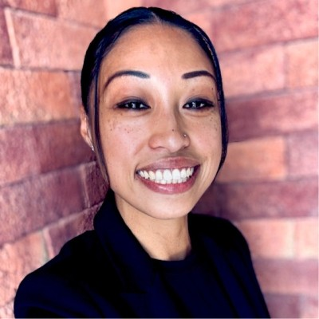

13+ Years Building People Operations Infrastructure in High-Growth SaaS & VC-Backed Startups · Recruiting, Onboarding, Compliance & Total Rewards · US–India Distributed Teams
I'm a People Operations Manager with 13+ years of progressive HR experience inside high-growth SaaS and VC-backed technology companies — including two Series B→C startups. I've spent my career building the people infrastructure that lets companies scale without breaking: structured onboarding, compliant HRIS systems, performance frameworks tied to total rewards, and employee relations programs that actually work.
At Ridecell, I grew from People Ops Manager to Director over seven years, reporting to the CFO — scaling a 300+ person global team across five international jurisdictions. At Prezent AI, I stepped into a 500-person AI SaaS company and reported directly to the CFO and CEO, executing a full compliance audit and rebuilding the people operations infrastructure from the ground up.
I've worked closely with India-based HR teams at both companies, managing the complexities of distributed, multinational workforces while keeping values and culture tightly aligned. I understand what it takes to build a people function that's both operationally tight and genuinely human — and MontyCloud's BRIDGE values describe exactly the kind of environment where I do my best work.
Thank you for making my onboarding so smooth and a lovely experience. Wishing you all the best.
You both did a fantastic job today with the All Hands! Thank you for all the hustle and the quality work — it really shows in the production and results. This meeting has become a staple of our company culture. You both are a HUGE part of the behind the scenes and often front-of-the-line magic ✨
Really good work on how we have managed costs for our team the past few months. Very grateful to you for being proactive about this and being on top of it. It'll help.
Special thanks for helping me out regarding California paid family leave and immigration things. Appreciate your proactiveness for being a helping hand 🙂
You bring the best out in people by being you. Even better, you can capture it.
Thank you for rallying the crowd last week at CONVERGE! Love the energy and sense of fun you brought to the event. Great work!